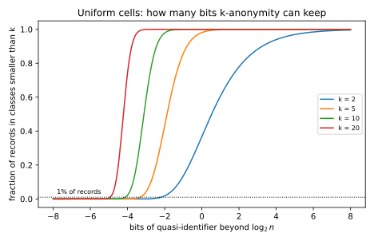
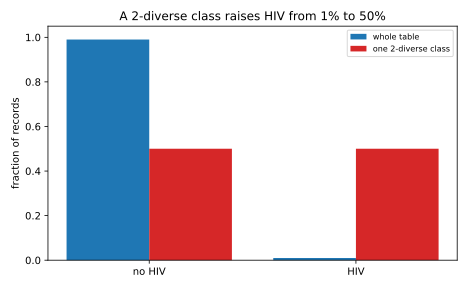
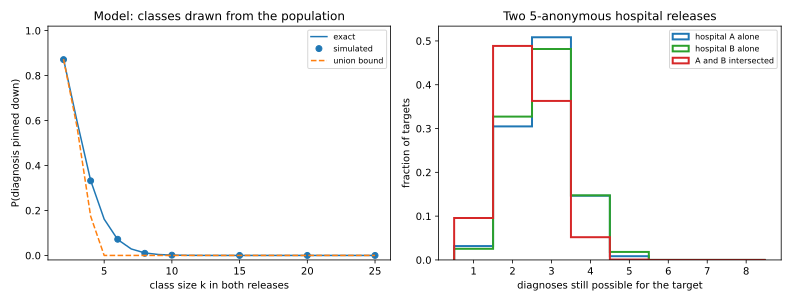

16 Syntactic anonymity and how it breaks
Linkage and re-identification showed that deleting names does not anonymize a table. The columns that remain, such as age, ZIP code and sex, are quasi-identifiers: none of them names anyone, but together they single out most people. Between 1998 and 2008, researchers answered with definitions that constrain the released table itself. k-anonymity hides every record in a crowd of at least \(k\) records with the same quasi-identifiers. l-diversity asks each crowd to hold several different values of the sensitive column, such as a diagnosis, and t-closeness asks each crowd to have the same mix of those values as the whole table. They are called syntactic because each is a property of the published table that you can check by reading it. Statistics offices and open-source tools such as ARX still use them, so you need to know where each promise ends.
The one idea of this chapter is that a syntactic definition fixes the adversary’s knowledge in advance. k-anonymity assumes that the adversary knows the target’s quasi-identifiers and nothing else. l-diversity lets it also rule out a few of the target’s sensitive values, and t-closeness lets it know how the sensitive values are spread over the whole table. Each attack below gives the adversary one piece of knowledge more than its definition assumes, and the guarantee then fails. A second release, the most ordinary extra knowledge there is, breaks all three definitions.
The running example is a synthetic hospital table of 10,000 patients, with age, ZIP code and sex as quasi-identifiers and one of eight diagnoses as the sensitive attribute. Released with exact quasi-identifiers, it lets an adversary who knows a random patient’s three columns pick out that patient’s record with probability 0.933. Two independent anonymized releases of it reveal more than three times as many diagnoses as either alone.
| Symbol | Meaning |
|---|---|
| \(n\); \(S\), \(m\) | records; the sensitive attribute and its number of values |
| \(E\), \(\lvert E\rvert\); \(J\) | an equivalence class (records with the same released quasi-identifiers) and its size; the number of classes |
| \(n_E(v)\); \(P_E(v)\), \(P(v)\) | records of \(E\) with \(S = v\); their fraction in \(E\), and in the table |
| \(k\); \(K\), \(\lambda_k\) | the smallest class size; cells of the uniform model, and the mean number of people per cell it needs |
| \(\ell\), \(c\); \(r_1 \ge \dots \ge r_m\) | the parameters of l-diversity; a class’s sorted value counts |
| \(t\); \(P_E(A)\) | the parameter of t-closeness; the probability of a set \(A\) of values |
16.1 k-anonymity
Sweeney and Samarati’s 1998 answer to the linkage attack is to make every combination of quasi-identifiers in the release shared by at least \(k\) people. The data holder, the custodian, gets there by generalizing, so that age 37 becomes 35–39 and ZIP code 02139 becomes 021**, and by suppressing the few records that still stand out. This section asks what the definition buys against linkage, and what it costs in detail.
Definition 16.1 (k-anonymity) A generalization replaces each quasi-identifier of a record by a coarser value, such as an age by a range or a ZIP code by a prefix, and different records may be coarsened differently. Suppression deletes records. An equivalence class \(E\) of the released table is a set of records with the same generalized quasi-identifiers, and \(\lvert E\rvert\) is its number of records. A release is k-anonymous if every equivalence class has at least \(k\) records.
The linkage game of Linkage and re-identification draws a target uniformly from a release of \(n\) records and gives the adversary the target’s quasi-identifiers, and the adversary wins if it picks out the target’s record. By Proposition 15.1, the best it can do is guess at random within the target’s class, which succeeds with probability \(J/n\) over \(J\) classes. For a fixed \(n\), large classes mean few classes, and that is the whole guarantee.
Proposition 16.1 (k-anonymity caps linkage) If a release of \(n\) records is k-anonymous, then the adversary’s success in the linkage game is at most \(1/k\): \[\Pr[\text{win}] = \frac{J}{n} \le \frac1k. \tag{16.1}\]
Proof.
- Count records by class. The \(J\) classes split the \(n\) records between them, each record in exactly one class, so \(n = \sum_j\lvert E_j\rvert\).
- Use the definition. Every class has at least \(k\) records, so the sum is at least \(Jk\). Then \(n \ge Jk\), which is \(J/n \le 1/k\).
- Read off the linkage success. Equation 15.1 says that the linkage success is \(J/n\), so it is at most \(1/k\).
The guarantee is about identity only. Equation 16.1 bounds the chance of picking out the target’s record, and says nothing about the sensitive attribute, which the next two sections attack. It also needs the right columns treated as quasi-identifiers. In sparse data such as movie ratings, every column is one, because a few ratings already single a person out (Section 15.5). Every column must then be coarsened until \(k\) records agree on all of them, which leaves little of the table (Aggarwal, 2005).
Coarse quasi-identifiers protect more but say less, so how coarse must they be? Suppose the generalized quasi-identifiers split \(n\) people into \(K\) equally likely cells, each person falling into a cell independently, and no record is suppressed, so each cell is a class. Naming a cell takes \(\log_2 K\) bits, against the \(\log_2 n\) bits that single out one person. The number of other people in a given person’s cell is a \(\mathrm{Bin}(n - 1, 1/K)\) count, which by Theorem 1.2 is close to a Poisson count with mean \((n - 1)/K \approx n/K\) when people and cells are many.
Proposition 16.2 (The cost of k-anonymity for uniform cells) Suppose \(n\) people fall independently into \(K\) equally likely cells, and treat the number of other people in a person’s cell as a \(\mathrm{Poisson}(n/K)\) count. A person’s class is smaller than \(k\) when at most \(k - 2\) others share the cell, so the expected fraction of people in classes smaller than \(k\) is \[\Pr[\mathrm{Poisson}(n/K) \le k - 2]. \tag{16.2}\] Suppose the custodian accepts that in expectation at most 1% of records fall in such classes, to be suppressed. Let \(\lambda_k\) be the mean at which the fraction is exactly 1%, that is \(\Pr[\mathrm{Poisson}(\lambda_k) \le k - 2] = 0.01\). The fraction falls as the mean grows, so it is at most 1% exactly when \(n/K \ge \lambda_k\), and the quasi-identifiers may carry at most \[\log_2 n - \log_2\lambda_k \text{ bits.} \tag{16.3}\]
Proof. The plan is to compute the chance that one person’s class is too small, note that this chance is also the expected fraction of such people, and then solve for the coarseness.
- The size of a person’s class. A person’s class is their cell, which holds the person plus \(N\) others, with \(N\) a \(\mathrm{Poisson}(n/K)\) count by assumption.
- When it is too small. The class is smaller than \(k\) when \(1 + N \le k - 1\), that is when \(N \le k - 2\), which has probability \(\Pr[\mathrm{Poisson}(n/K) \le k - 2]\).
- From one person to the fraction. The expected number of people in small classes is the sum, over people, of each one’s chance of being in one, because the expected count of events is the sum of their probabilities. Every person has the same chance, so the sum is \(n\) times it, and the expected fraction is that chance.
- Solve for the coarseness. A Poisson count with a larger mean is more likely to exceed any fixed level, so the chance that it is at most \(k - 2\) falls as the mean grows. The fraction is therefore at most 1% exactly when \(n/K \ge \lambda_k\), that is \(K \le n/\lambda_k\). Taking \(\log_2\) of both sides gives \(\log_2 K \le \log_2 n - \log_2\lambda_k\).
So k-anonymity costs more than the naive \(\log_2 k\) bits below \(\log_2 n\), which exactly \(k\) people in each of \(K = n/k\) cells would allow. Cells vary in size around their mean, and the unlucky small cells violate the definition, so you need \(\lambda_k\) people per cell on average, more than \(k\). For \(k = 2\) a person violates the definition when \(N = 0\), which has probability \(e^{-n/K}\), and \(e^{-n/K} = 0.01\) gives \(\lambda_2 = \ln 100 = 4.61\), more than twice \(k\).
Example 16.1 Table 16.2 applies Equation 16.2 to a population of \(n = 10{,}000\), with \(\log_2 n = 13.29\) bits. For \(k = 2\), \(\lambda_2 = 4.61\) from the calculation above, \(\log_2 4.61 = 2.20\), and \(13.29 - 2.20 = 11.08\) bits are allowed.
| \(k\) | People per cell \(\lambda_k\) | Bits allowed | Below \(\log_2 n\) by | \(\log_2 k\) |
|---|---|---|---|---|
| 2 | 4.61 | 11.08 | 2.20 | 1.00 |
| 5 | 10.05 | 9.96 | 3.33 | 2.32 |
| 10 | 17.40 | 9.17 | 4.12 | 3.32 |
| 20 | 30.58 | 8.35 | 4.93 | 4.32 |
| 50 | 66.74 | 7.23 | 6.06 | 5.64 |
The last two columns compare the true cost with the naive \(\log_2 k\). The gap is about 1.2 bits at \(k = 2\) (\(2.20 - 1.00\)) and shrinks to about 0.4 bits at \(k = 50\) (\(6.06 - 5.64\)). A Poisson count with a large mean varies little relative to its mean, so \(\lambda_k/k\) approaches 1 (Figure 16.1).
At the other extreme, Section 15.3 showed that 99% of people are unique once the quasi-identifiers carry \(\log_2n + 6.64\) bits. Hiding 99% in pairs needs 2.20 bits below \(\log_2 n\). So only \(6.64 + 2.20 = 8.84\) bits, about 9, separate “almost everyone is unique” from “almost everyone is hidden in a pair”, and every published attribute uses some of those bits.

Real tables are not uniform, so real anonymizers search for a generalization that works on the data at hand. The script uses the algorithm of LeFevre, DeWitt & Ramakrishnan (2006).
Definition 16.2 (Mondrian) Given a table and a criterion that a class must meet, such as having at least \(k\) records, Mondrian starts with the whole table as one box. Each quasi-identifier is coded as ordered numbers (ZIP codes in a fixed order, sex as 0 and 1). Mondrian splits a box at the median of the quasi-identifier whose values in the box span the largest share of their full range, as long as both halves still meet the criterion. If that split fails, it tries the next widest quasi-identifier, and a box whose every split fails is final. Each final box is a class, published as a range per quasi-identifier.
Because Mondrian splits until a half would fail the criterion, its classes stay close to size \(k\). With no tied values they have between \(k\) and \(2k - 1\) records, because a box of \(2k\) or more records splits at its median into two halves of at least \(k\).
Example 16.2 In the hospital table of \(n = 10{,}000\) patients, age runs from 0 to 89, the ZIP code takes 800 values with a few areas far more common than the rest, and sex has two values. The diagnosis depends on age, from asthma in childhood to cancer late in life. Flu is equally common at every age, and HIV is rare (1.0% of records). By Equation 15.1, the exact linkage success of 0.933 means that the patients fall into \(0.933 \times 10{,}000 = 9{,}330\) distinct combinations, so most are alone in theirs. Table 16.3 gives the result of Mondrian with k-anonymity as the criterion, and Section 16.2 reads its last two columns.
| \(k\) | Classes | Sizes | Mean width | Linkage \(J/n\) | Certain disclosure | Guess accuracy |
|---|---|---|---|---|---|---|
| 2 | 4,091 | 2–5 | 0.005 | 0.4091 | 0.2797 | 0.675 |
| 5 | 1,542 | 5–11 | 0.016 | 0.1542 | 0.0232 | 0.593 |
| 10 | 748 | 10–20 | 0.028 | 0.0748 | 0.0000 | 0.562 |
| 20 | 366 | 20–41 | 0.043 | 0.0366 | 0.0000 | 0.540 |
| 50 | 129 | 50–99 | 0.075 | 0.0129 | 0.0000 | 0.506 |
The linkage success sits between \(1/(2k)\) and \(1/k\) for every \(k\) (Figure 16.2, left), because \(J/n\) is one over the average class size. The upper bound \(1/k\) is guaranteed by Proposition 16.1. The lower bound is not, because ties in age and sex let Mondrian leave classes larger than \(2k\), up to 41 records at \(k = 20\), but they are rare enough that the average stays below \(2k\). The cost in precision is small: at \(k = 5\) the average range covers 1.6% of each quasi-identifier’s span.

16.2 Homogeneity, background knowledge and l-diversity
Machanavajjhala, Kifer, Gehrke & Venkitasubramaniam (2006) pointed out that k-anonymity hides who a record belongs to but not what it says, and the release exists to show a sensitive attribute \(S\), such as a diagnosis. This section asks what an adversary learns about a target’s sensitive value from a k-anonymous release, and what condition on the classes limits it. Table 16.4 is a 3-anonymous release that shows the two attacks.
| ZIP code | Age | Diagnosis |
|---|---|---|
| 130** | < 30 | heart disease |
| 130** | < 30 | heart disease |
| 130** | < 30 | heart disease |
| 148** | 4* | cancer |
| 148** | 4* | flu |
| 148** | 4* | heart disease |
| 130** | 3* | cancer |
| 130** | 3* | cancer |
| 130** | 3* | flu |
Both attacks, and the guarantee that answers them, compute the adversary’s posterior, its belief about the target’s sensitive value after it has seen the release.
Lemma 16.1 (Within a class, the posterior is the frequency) Suppose the adversary knows the target’s quasi-identifiers, knows that the target is in the release, and knows nothing else about the target. Let \(E\) be the target’s class, and let \(n_E(v)\) be the number of records of \(E\) with sensitive value \(v\). Then the adversary’s posterior is the class’s frequency of \(v\), \[\Pr[S_{\text{target}} = v \mid \text{release}] = \frac{n_E(v)}{\lvert E\rvert} = P_E(v). \tag{16.4}\] If the adversary also knows that the target’s value is not in a set \(B\) of values, then for every value \(v\) outside \(B\), \[\Pr[S_{\text{target}} = v \mid \text{release}, S_{\text{target}} \notin B] = \frac{n_E(v)}{\lvert E\rvert - \sum_{u \in B}n_E(u)}. \tag{16.5}\]
Proof.
- Every record of the class is equally likely to be the target’s. All records of \(E\) show the same generalized quasi-identifiers and differ only in the sensitive value, which the adversary does not know. The adversary knows nothing else about the target, so, as for a target drawn at random, it has no reason to favour any record, and each has probability \(1/\lvert E\rvert\).
- Count the records with value \(v\). The target has value \(v\) exactly when its record is one of the \(n_E(v)\) records with that value. Adding \(1/\lvert E\rvert\) over them gives \(n_E(v)/\lvert E\rvert\).
- Cross out the excluded values. Knowing that the target’s value is not in \(B\) rules out the records with values in \(B\). The records that are left still look alike, so the adversary spreads its belief evenly over them. There are \(\lvert E\rvert - \sum_{u \in B}n_E(u)\) of them, and step 2 applied to these records gives the second formula.
Alice is 26 and lives in ZIP code 13053, so her class is the first. Every record in it says heart disease, and by Lemma 16.1 her posterior for heart disease is \(\frac33 = 1\), so the homogeneity attack discloses her diagnosis without re-identifying anyone. Bob is 35, lives in 13068, and is in the third class, where two of three records say cancer, so his posterior for cancer is \(\frac23\). His neighbour knows that Bob never had flu that season and rules it out. Crossing out the flu record leaves two cancer records, and cancer then has posterior \(\frac22 = 1\), which is the background knowledge attack.
Both attacks work because one value dominates the class, either from the start or after a few values are ruled out. So l-diversity asks for enough different values in each class, and its three versions differ in how they measure “enough”. Sort a class’s value counts from largest to smallest as \(r_1 \ge r_2 \ge \dots \ge r_m\). The entropy \(H(P_E) = -\sum_v P_E(v)\log_2 P_E(v)\) measures in bits how spread out the values are, and \(\ell\) equally common values have entropy exactly \(\log_2 \ell\). The third version is built to survive the background knowledge attack.
Definition 16.3 (l-diversity) A class \(E\) is
- distinct \(\ell\)-diverse if it holds at least \(\ell\) different values;
- entropy \(\ell\)-diverse if \(H(P_E) \ge \log_2\ell\), so that the class is at least as spread out as \(\ell\) equally common values;
- recursive \((c, \ell)\)-diverse if \(r_1 < c\,(r_\ell + r_{\ell+1} + \dots + r_m)\), so that the most common value has fewer than \(c\) times as many records as all the values outside the \(\ell - 1\) most common have together.
A release is \(\ell\)-diverse in one of these senses if every class is.
The right-hand side of the recursive condition is \(c\) times the tail, the records left after the \(\ell - 1\) most common values are set aside. The guarantee below lets the adversary rule out \(\ell - 2\) values, the most any guarantee can allow, since ruling out \(\ell - 1\) values of a class with exactly \(\ell\) values leaves one. It holds because ruling out values only removes counts, so the top count cannot grow and the rest cannot shrink below the tail.
Proposition 16.3 (What recursive diversity guarantees) Let a class be recursive \((c, \ell)\)-diverse, and let the adversary know, besides the target’s quasi-identifiers, that the target’s value is not one of some \(\ell - 2\) values. Then every remaining value \(v\) has \[\Pr[S_{\text{target}} = v \mid \text{release}, \text{background}] < \frac{c}{1 + c}. \tag{16.6}\]
Proof. The plan is to show that the defining inequality survives elimination, and then let Lemma 16.1 turn it into a posterior.
- What is left. Rule out a set \(B\) of \(\ell - 2\) values, all occurring in the class (a value that does not occur removes nothing, and leaves more counts in the tail). The remaining \(m - \ell + 2\) values keep their original counts. Call the largest of them \(r'_1\), and the total of the other \(m - \ell + 1\) remaining values \(R\).
- The top does not grow. Ruling out values removes records but never adds any, so \(r'_1\) is one of the original counts. No original count exceeds \(r_1\), so \(r'_1 \le r_1\).
- The tail does not shrink below the original tail. \(R\) is a sum of \(m - \ell + 1\) of the original counts. The smallest such sum is that of the \(m - \ell + 1\) smallest counts, which is \(r_\ell + \dots + r_m\). So \(R \ge r_\ell + \dots + r_m\).
- Combine with the definition. Chaining step 2, the definition and step 3 gives \[r'_1 \le r_1 < c\,(r_\ell + \dots + r_m) \le c\,R. \tag{16.7}\]
- Turn counts into a posterior. By Lemma 16.1, after elimination the posterior of a remaining value is its count over the total count left, \(r'_1 + R\), so it is at most \(r'_1/(r'_1 + R)\). The share \(x/(x + R)\) grows with \(x\), like a larger slice of a pie whose other part is fixed. With \(r'_1 < cR\) from step 4, the share is therefore below \[\frac{cR}{cR + R} = \frac{c}{1 + c}. \tag{16.8}\]
l-diversity rules out certainty but still allows high likelihood. The bound \(c/(1 + c)\) is \(\frac12\) at \(c = 1\), \(\frac23\) at \(c = 2\) and \(\frac34\) at \(c = 3\), so even recursive diversity lets the adversary be fairly sure. Distinct \(\ell\)-diversity only says that the adversary must rule out \(\ell - 1\) values to be certain, while one value can still hold all but \(\ell - 1\) of the records. Entropy \(\ell\)-diversity does not limit the top value’s share directly either. An entropy 3-diverse class over 8 values can have one value in 73% of its records, because the other 27% spread evenly over seven values give entropy \(-0.73\log_2 0.73 - 0.27\log_2\frac{0.27}{7} = 1.60\) bits, above \(\log_2 3 = 1.58\).
The guarantee assumes how much the adversary knows instead of limiting it. It covers \(\ell - 2\) ruled-out values, and one more can give certainty whatever \(c\) is. Softer knowledge, such as “probably not flu”, is not covered either.
Some tables cannot be made diverse at all. The whole table’s distribution \(P\) is the average of its classes’ distributions \(P_E\), weighted by the class shares. Such an average is at least as spread out in entropy as its parts are on average, so a concentrated table forces some class to be concentrated too.
Proposition 16.4 (A table with low entropy has no entropy-diverse release) If the whole table’s distribution \(P\) of the sensitive attribute has entropy below \(\log_2\ell\), then no partition of the table into classes is entropy \(\ell\)-diverse.
Proof.
- The table is a mixture of its classes. Pick a record uniformly at random, and let \(C\) be its class and \(S\) its sensitive value. Then \(S\) has distribution \(P\), and given that \(C\) is the class \(E\), it has distribution \(P_E\).
- Conditioning lowers entropy on average. Information theory proves in Corollary 5.1 that \(H(S \mid C) \le H(S)\). Here \(H(S \mid C)\) is, by the definition of conditional entropy, the average of the class entropies \(H(P_E)\), weighted by the class shares, and \(H(S)\) is \(H(P)\).
- Conclude. If every class had \(H(P_E) \ge \log_2\ell\), their weighted average would too, and step 2 would give \(H(P) \ge \log_2\ell\), against the hypothesis.
Example 16.3 In Table 16.4 the three classes hold 1, 3 and 2 different values, so they are distinct 1-, 3- and 2-diverse. The largest \(\ell\) for which a class is entropy \(\ell\)-diverse is \(2^{H(P_E)}\), because \(\ell\) equally common values have entropy \(\log_2\ell\). The first class has one value, entropy 0 and \(\ell = 1.00\), and the second has three equally common values and \(\ell = 3.00\). The third, \(\frac23\) cancer and \(\frac13\) flu, has entropy \(\frac23\log_2\frac32 + \frac13\log_2 3 = 0.918\) bits and \(\ell = 2^{0.918} = 1.89\). The release as a whole is only 1-diverse, because of Alice’s class.
In the hospital table, the “certain disclosure” column of Table 16.3 counts the patients in homogeneous classes. They are 28.0% of all patients at \(k = 2\), and 2.3% at \(k = 5\), which is 232 patients whose diagnosis the release states outright. Knowing a patient’s age never gives that certainty, since at no age does any diagnosis have population probability above 0.705.
A posterior must be read against what the adversary would believe with no release. The right comparison is the imputation baseline of Attribute inference and model inversion, the best guess from the target’s own quasi-identifiers when the population is known exactly, which here is a guess from age alone. Guessing the table’s most common diagnosis is right for 18.5% of patients, imputation for 53.6% (Figure 16.2, right), and a 5-anonymous release for 59.3%. So most of what the release teaches is the age–diagnosis pattern, which any useful study of this table would report. The excess over imputation, \(0.593 - 0.536 = 0.057\) at \(k = 5\), comes from classes so small that their most common diagnosis is often the member’s own, and it falls to \(0.540 - 0.536 = 0.004\) at \(k = 20\).
Table 16.5 adds diversity to \(k = 5\).
| Criterion | Classes | Sizes | Mean width | Linkage \(J/n\) | Certain disclosure | Guess accuracy |
|---|---|---|---|---|---|---|
| \(k = 5\) | 1,542 | 5–11 | 0.016 | 0.1542 | 0.0232 | 0.593 |
| \(k = 5\), distinct \(\ell = 3\) | 1,132 | 5–33 | 0.022 | 0.1132 | 0.0000 | 0.574 |
| \(k = 5\), recursive \((c = 2, \ell = 3)\) | 389 | 5–641 | 0.113 | 0.0389 | 0.0000 | 0.417 |
Distinct 3-diversity removes the certain disclosures for little cost. Recursive \((2, 3)\)-diversity forces some classes to cover hundreds of patients and pushes the guess accuracy below imputation. Diagnosis depends on age, so to keep any diagnosis from dominating a class, Mondrian must mix ages, and that erases the pattern the data were released to show.
16.3 Skewness, similarity and t-closeness
l-diversity counts values, but what matters is how far the adversary’s belief moves, and Li, Li & Venkatasubramanian (2007) found two attacks that diversity does not see. In the skewness attack, 1% of the table has HIV, and a class that is half HIV is 2-diverse in every sense, yet by Lemma 16.1 it raises the belief that a member has HIV fifty-fold. In the similarity attack, a class holds gastric ulcer, gastritis and stomach cancer, so it is 3-diverse, and still reveals a stomach disease. This section measures a class by its distance from the whole table’s distribution.
Definition 16.4 (t-closeness) Let \(d\) be a distance between distributions on the values of the sensitive attribute. A release is t-close if every class’s distribution is within distance \(t\) of the whole table’s, that is \(d(P_E, P) \le t\) for every class \(E\).
The first choice of distance is total variation. By Theorem 3.3, the total variation (TV) distance, half the total absolute difference between two probability tables, equals the largest difference between the probabilities the two tables give to one set of values \(A\): \[\mathrm{TV}(P_E, P) = \frac12\sum_v\lvert P_E(v) - P(v)\rvert = \max_A\,\lvert P_E(A) - P(A)\rvert. \tag{16.9}\]
Proposition 16.5 (What t-closeness in total variation guarantees) If a release is t-close with the total variation distance, then for every class \(E\) and every set of values \(A\), \[\lvert P_E(A) - P(A)\rvert \le t. \tag{16.10}\] In particular, guessing the most common value of the target’s class is right with probability at most \(\max_vP(v) + t\), the best guess from the table alone plus \(t\).
Proof.
- A distance bound is an event bound. By Theorem 3.3, \(\mathrm{TV}(P_E, P)\) is the largest of \(\lvert P_E(A) - P(A)\rvert\) over all sets \(A\), so a bound \(t\) on the distance bounds every one of them by \(t\).
- The adversary’s belief is the class distribution. By Lemma 16.1, the adversary’s belief about a target in class \(E\) is \(P_E\). So every question it can ask about the target’s value, “is it in \(A\)?”, gets an answer within \(t\) of the answer from the table as a whole.
- Apply it to the best guess. Take \(A = \{v\}\) for the class’s most common value \(v\). Then step 1 gives \(P_E(v) \le P(v) + t\), and \(P(v)\) is at most \(\max_uP(u)\).
The bound is additive, but rare values need a ratio. Equation 16.10 lets a 1% value rise to \(1\% + t\), which at \(t = 0.15\) is 16%, a sixteen-fold increase. A guarantee for rare values must bound the ratio of the adversary’s beliefs with and without the release, and that is the shape of differential privacy, the definition of Part 3.
Total variation treats every pair of values as equally different, so it does not see the similarity attack. The earth mover’s distance (EMD), the choice of Li et al., makes similar values close. Think of each distribution as piles of sand on the values, and of a ground distance between values as the cost of moving a unit of sand from one to the other.
Definition 16.5 (Earth mover’s distance) Given a ground distance between values, the earth mover’s distance \(\mathrm{EMD}(P_E, P)\) is the least total cost of moving the mass of \(P_E\) until it becomes \(P\), where moving mass \(f\) from value \(i\) to value \(j\) costs \(f\) times their ground distance.
For ordered values, such as salary bands or age groups, the least cost has a closed form. On a line, sand can only get from one side of a gap to the other by crossing it, so the work can be counted gap by gap.
Proposition 16.6 (Earth mover’s distance on ordered values) Number \(m\) ordered values \(1\) to \(m\), and place them at ground distance \(\lvert i - j\rvert/(m - 1)\), so that the two ends are distance 1 apart. Then \[\mathrm{EMD}(P_E, P) = \frac{1}{m - 1}\sum_{i=1}^{m-1}\Big\lvert\sum_{j \le i}\big(P_E(j) - P(j)\big)\Big\rvert. \tag{16.11}\]
Proof.
- Cost per gap. A move from \(i\) to \(j\) crosses each of the \(\lvert i - j\rvert\) gaps between them once, so its cost is \(1/(m - 1)\) per unit of mass per gap crossed.
- How much must cross each gap. Look at the gap between values \(i\) and \(i + 1\). The values up to \(i\) hold \(\sum_{j \le i}P_E(j)\) under the class and must end up holding \(\sum_{j \le i}P(j)\). Their excess, or shortfall, is \(\sum_{j \le i}(P_E(j) - P(j))\), and that net mass has to cross the gap, rightwards if it is positive and leftwards if it is negative. So any plan moves at least this much across the gap.
- A plan that does no more. Move exactly the net amount of step 2 across each gap, between neighbouring values. Value \(i\) then gains the net mass entering through its two gaps, which is \(P(i) - P_E(i)\), so the plan turns \(P_E\) into \(P\). So the least cost is \(1/(m - 1)\) times the sum, over the \(m - 1\) gaps, of the absolute net mass that crosses each one, which is Equation 16.11.
The choice of distance is a choice of what counts as similar. EMD with a ground distance that puts diagnoses of the same organ close together treats gastritis and gastric ulcer as close, so a class full of stomach diseases is far from the table and fails the definition. On three salary bands spread evenly in the table, a class all in the lowest band has cumulative differences \(\frac23\) and \(\frac13\), so by Equation 16.11 its EMD is \(\frac12(\frac23 + \frac13) = 0.5\). A class spread evenly across the bands has EMD 0.
Example 16.4 Take total variation first. In Table 16.4, the table’s distribution is \(\frac49\) heart disease, \(\frac39\) cancer and \(\frac29\) flu. Both distributions sum to 1, so the excesses and shortfalls are equal, and the half-sum of absolute differences is the total excess of the class over the table. Alice’s class is all heart disease, an excess of \(1 - \frac49 = \frac59 = 0.556\). The second class is \(\frac13 = \frac39\) of each value, an excess of \(\frac39 - \frac29 = \frac19 = 0.111\) on flu only. Bob’s class, \(\frac69\) cancer and \(\frac39\) flu, has excesses \(\frac39\) and \(\frac19\), together \(\frac49 = 0.444\). So the release is \(t\)-close only for \(t \ge 0.556\).
For the skewness attack (Figure 16.3), the class that is 50% HIV is at total variation \(0.50 - 0.01 = 0.49\) from a table with 1% HIV, the excess on HIV. A class with 10% HIV is at \(0.10 - 0.01 = 0.09\), which passes \(t = 0.1\), and still makes HIV ten times as likely for its members.
Table 16.6 adds t-closeness in total variation to \(k = 5\) on the hospital table.
| Criterion | Classes | Sizes | Mean width | Largest TV | Guess accuracy | Bound \(\max_vP(v) + t\) |
|---|---|---|---|---|---|---|
| \(k = 5\) | 1,542 | 5–11 | 0.016 | 0.937 | 0.593 | — |
| \(k = 5\), \(t = 0.3\) | 495 | 6–60 | 0.291 | 0.300 | 0.275 | 0.485 |
| \(k = 5\), \(t = 0.15\) | 136 | 14–304 | 0.324 | 0.149 | 0.222 | 0.335 |
The bound column is \(0.185 + t\), and the guess accuracy respects it, as Proposition 16.5 says it must. But the classes now span about 30% of each quasi-identifier’s range, and the guess accuracy of 0.222 to 0.275 is far below the 0.536 of imputation from age. Making every class t-close mixed ages, as recursive diversity did.

16.4 The composition attack
Every definition so far is about one release, and Ganta, Kasiviswanathan & Smith (2008) asked what happens when there are two. Two hospitals in one city publish their patient tables, each properly k-anonymous or \(\ell\)-diverse, with no coordination, so a patient treated at both appears in a class of each.
Definition 16.6 (The composition attack) Let a target appear in two releases, in class \(E_1\) of the first and class \(E_2\) of the second. The attack’s candidates are the values that appear in both classes, \[\{v : n_{E_1}(v) > 0\} \cap \{v : n_{E_2}(v) > 0\}. \tag{16.12}\] The target’s value is pinned down when a single candidate is left.
The true value is always a candidate, because the target’s own record carries it in each class, so a single candidate is the truth. None of the three definitions composes, that is, survives the combination of two releases, because each is a condition on one table. A hospital cannot check its classes against releases it cannot see, so a definition that survives must bound what two releases leak together, whatever the adversary knows. Differential privacy, the subject of Part 3, does.
To see how often the attack succeeds, model the classes as random. Let the target’s class have \(k_1\) records in the first release and \(k_2\) in the second, and let the values of the other members be independent draws from the population, with \(p_v\) the probability of value \(v\). Given the true value \(v\), let \(W_1\) be the set of wrong values (those other than \(v\)) that appear among the \(k_1 - 1\) other members of the first class, and \(W_2\) the same for the second. The target is pinned exactly when no wrong value is left open by both. Write \(p(W) = \sum_{u \in W}p_u\) for the probability of a set of values \(W\).
Proposition 16.7 (How often two releases pin down a value) In this model, the probability that the two releases pin down the target’s value is \[\Pr[\text{pinned}] = \sum_vp_v\,\mathbb E\big[(1 - p(W_1))^{k_2 - 1}\big], \tag{16.13}\] where the expectation is over the random set \(W_1\) for the given \(v\). For every set \(W\) of values other than \(v\), the probability that \(W_1\) is exactly \(W\) is \[\Pr[W_1 = W] = \sum_{T \subseteq W}(-1)^{\lvert W\rvert - \lvert T\rvert}\big(p_v + p(T)\big)^{k_1 - 1}. \tag{16.14}\]
Proof. The plan is to fix the true value and what the first class contains, compute the chance that the second class avoids it, and then average.
- Condition on the true value. The target’s true value is \(v\) with probability \(p_v\). Everything below is for a fixed \(v\), and the outer sum \(\sum_v p_v(\cdot)\) averages over it.
- When the value is pinned. The candidates are \(v\) itself together with the wrong values that appear in both classes, the set \(W_1 \cap W_2\). So the value is pinned exactly when \(W_1\) and \(W_2\) are disjoint.
- Fix what the first class leaves open. Condition on \(W_1 = W\) for a particular set \(W\). The \(k_2 - 1\) others of the second class are independent draws, and each avoids \(W\) with probability \(1 - p(W)\), so \[\Pr[W_2 \cap W = \emptyset] = (1 - p(W))^{k_2 - 1}. \tag{16.15}\] Averaging over the possible sets \(W\), weighted by \(\Pr[W_1 = W]\), gives the expectation in Equation 16.13.
- The distribution of the first class’s set. \(W_1 = W\) means two things. Every one of the \(k_1 - 1\) draws lands in \(W \cup \{v\}\), and each value of \(W\) is hit at least once. For any set \(T\), the event that all draws land in \(T \cup \{v\}\) has probability \((p_v + p(T))^{k_1 - 1}\). Inclusion–exclusion then handles the second requirement. Start from “all draws land in \(W \cup \{v\}\)”, subtract the cases where some value of \(W\) is missed, which means all draws land in a smaller set, add back the cases subtracted twice, and continue alternating over every number of missed values. Each term is labelled by a subset \(T\) of \(W\) that the draws are allowed to hit, and the values of \(W\) outside \(T\) are the ones forced to be missed. The sign \((-1)^{\lvert W\rvert - \lvert T\rvert}\) is plus when an even number are missed and minus when an odd number are.
For a single wrong value \(u\), the sum has two terms, \[\Pr[W_1 = \{u\}] = (p_v + p_u)^{k_1 - 1} - p_v^{k_1 - 1}. \tag{16.16}\] That is the probability that every draw is \(v\) or \(u\), minus the probability that every draw is \(v\), in which case \(u\) was never hit.
The model understates the risk, because it draws the other members of a class from the whole population. In real releases a class collects people of similar ages, who are more likely to share a diagnosis, so the intersection is smaller.
The sum over subsets grows quickly with the number of values, so a simpler bound helps. The target escapes only if some wrong value turns up in both classes, and the chance of “some” is at most the sum of the chances of each.
Proposition 16.8 (A union bound on pinning) In the same model, \[\Pr[\text{pinned}] \ge 1 - \sum_vp_v\sum_{u \ne v}\big(1 - (1 - p_u)^{k_1 - 1}\big)\big(1 - (1 - p_u)^{k_2 - 1}\big). \tag{16.17}\]
Proof.
- When it fails. Given \(v\), the value is not pinned when some \(u \ne v\) is in both \(W_1\) and \(W_2\).
- The chance for one wrong value. The value \(u\) is missing from the first class when all \(k_1 - 1\) others avoid it, which has probability \((1 - p_u)^{k_1 - 1}\). So \(u\) is in \(W_1\) with probability \(1 - (1 - p_u)^{k_1 - 1}\), and likewise for \(W_2\). The two classes are drawn independently, so the probability that \(u\) is in both is the product.
- Add over wrong values. The expected number of wrong values in both sets is the sum of these products, because the expected count of events is the sum of their probabilities. A count that is at least 1 whenever the event happens has an expectation at least the event’s probability, so the chance that there is at least one shared wrong value is at most this sum. Subtracting from 1 and averaging over \(v\) gives Equation 16.17.
The union bound charges every wrong value separately, so it is accurate only when two wrong values rarely turn up in both classes at once. With classes of 2, each class holds at most one wrong value, and the bound is exact. With classes of 5, the sum in Equation 16.17 already exceeds 1, so the bound is negative.
Example 16.5 With the population’s diagnosis distribution of the hospital table, the model’s probability that two releases pin down the diagnosis is 0.8734 for classes of 2, 0.1615 for classes of 5, 0.0288 for classes of 7 and 0.0015 for classes of 10. It falls fast because a larger class contains more wrong values, each another chance for the two classes to share one. Simulation agrees to within 0.001 (Figure 16.4, left).
The script then runs the attack. A city has 15,000 people drawn from the model of the hospital table. Two hospitals each treat a random 10,000 of them, so 6,649 people are treated at both. Each hospital publishes a 5-anonymous Mondrian release of its own patients. Table 16.7 gives what the adversary learns about the 6,649.
| Releases | Pinned by release 1 alone | Pinned by release 2 alone | Pinned by both | Mean candidates, release 1 alone | Mean candidates, both |
|---|---|---|---|---|---|
| \(k = 5\) | 0.0289 | 0.0262 | 0.0985 | 2.79 | 2.38 |
| \(k = 5\), distinct \(\ell = 3\) | 0.0000 | 0.0000 | 0.0027 | 3.22 | 2.92 |
Two 5-anonymous releases pin down the diagnosis of 9.9% of the shared patients, more than three times either release alone (0.0985 against 0.0289 and 0.0262). At \(k = 5\) a patient’s class has 6.8 records on average over patients, so the nearest model case is classes of 7, which predicts only 2.9%. The release does better because real classes gather similar ages. With distinct 3-diversity, no single release pins anyone down, and the two together pin down 18 patients (0.27% of 6,649).

16.5 Code
The script code/syntactic_anonymity.py computes every number in this chapter and draws every figure. It implements Mondrian with each criterion, the uniform-cells calculation and every attack of the chapter. From the repository root:
uv run python code/part02-attacks/syntactic_anonymity.py| Experiment | Result |
|---|---|
| Toy release | Posteriors 1 (homogeneous class), \(\frac23\) cancer (Bob), 1 after ruling out flu; entropy \(\ell\) = 1.00, 3.00, 1.89; TV to the table 0.556, 0.111, 0.444 |
| Recursive \((c, \ell)\) bound | \(c/(1 + c)\) = 0.500, 0.667, 0.750 for \(c\) = 1, 2, 3 |
| Skewness | 50% HIV against 1%: TV 0.49, ratio 50. 10% HIV: TV 0.09, ratio 10 |
| Uniform cells, \(n = 10^4\) | Table 16.2 |
| Hospital table, \(n = 10^4\) | Exact quasi-identifiers: linkage 0.933. Baselines: most common diagnosis 0.185, imputation from age 0.536, largest population posterior 0.705 |
| Mondrian | Table 16.3, Table 16.5, Table 16.6 |
| Two hospitals | Table 16.7 |
| Composition model | Pinned: 0.8734 (\(k = 2\)), 0.1615 (\(k = 5\)), 0.0288 (\(k = 7\)), 0.0015 (\(k = 10\)); simulation within 0.001 |
tests/test_syntactic_anonymity.py checks that the output still matches.
16.6 Summary
| Result | Statement | Use |
|---|---|---|
| Definition 16.1, Proposition 16.1 | Every class has at least \(k\) records, so linkage \(J/n \le 1/k\) | Protects names, not attributes: ask what a class’s values reveal |
| Proposition 16.2 | Uniform cells: a fraction \(\Pr[\mathrm{Poisson}(n/K) \le k - 2]\) is in classes below \(k\) | 99% 2-anonymous at \(\log_2n - 2.20\) bits; more than \(\log_2 k\) bits |
| Definition 16.2 | Split at medians while both halves meet the criterion | Linkage between \(1/(2k)\) and \(1/k\) at little cost in precision |
| Lemma 16.1 | The posterior is the class’s frequency; ruling out values renormalizes | Every attribute attack, read against imputation |
| Definition 16.3, Proposition 16.3 | Recursive \((c, \ell)\)-diversity keeps the posterior below \(c/(1 + c)\) after \(\ell - 2\) values are ruled out | Distinct and entropy diversity do not cap the top value’s share |
| Proposition 16.4 | Table entropy below \(\log_2\ell\) rules out entropy \(\ell\)-diversity | Check the table’s entropy before choosing \(\ell\) |
| Definition 16.4, Proposition 16.5 | Total variation \(t\) moves every event’s probability by at most \(t\) | A 1% value may rise to \(1\% + t\): rare values need a bound on the ratio |
| Definition 16.5, Proposition 16.6 | On ordered values, EMD sums the net mass crossing each gap | Similar values are close, which catches the similarity attack |
| Definition 16.6, Proposition 16.7, Proposition 16.8 | Candidates are the values in both classes | No syntactic definition prevents pinning, so assume another release exists |
16.7 References
- Samarati & Sweeney, “Protecting Privacy when Disclosing Information: k-Anonymity and Its Enforcement through Generalization and Suppression” (SRI technical report, 1998), and Sweeney, “k-Anonymity: A Model for Protecting Privacy” (International Journal of Uncertainty, Fuzziness and Knowledge-Based Systems, 2002): the definition and the linkage attack it answers.
- LeFevre, DeWitt & Ramakrishnan, “Mondrian Multidimensional k-Anonymity” (ICDE, 2006): the median-split algorithm the script uses.
- Machanavajjhala, Kifer, Gehrke & Venkitasubramaniam, “l-Diversity: Privacy Beyond k-Anonymity” (ACM Transactions on Knowledge Discovery from Data, 2007; ICDE 2006): the homogeneity and background knowledge attacks, and the three versions of l-diversity.
- Li, Li & Venkatasubramanian, “t-Closeness: Privacy Beyond k-Anonymity and l-Diversity” (ICDE, 2007): the skewness and similarity attacks, and the earth mover’s distance.
- Ganta, Kasiviswanathan & Smith, “Composition Attacks and Auxiliary Information in Data Privacy” (KDD, 2008): the intersection attack on independent releases, and why a definition must survive other releases.
- Aggarwal, “On k-Anonymity and the Curse of Dimensionality” (VLDB, 2005): why high-dimensional data cannot be k-anonymized without destroying it.
- Prasser, Kohlmayer and colleagues, the ARX data anonymization tool (arx.deidentifier.org): an open implementation of these criteria.
- Article 29 Working Party, “Opinion 05/2014 on Anonymisation Techniques”: how European regulators judge these techniques against singling out, linkability and inference.